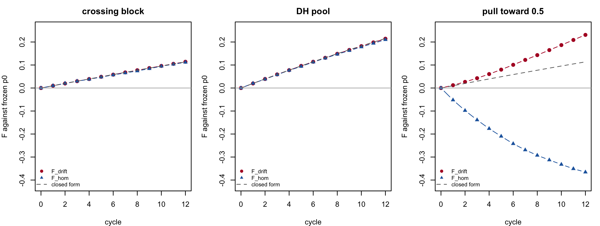

c(het_fraction_lines = mean(L / 2 == 0.5),
self_coancestry_min = min(diag(molecular_coancestry(L / 2))),
het_fraction_F1 = mean(ctx$X == 0.5),
twice_GD_WI_hyb = 2 * gd_partition(seq_len(ctx$N), ctx)[["GD_WI_hyb"]])
#> het_fraction_lines self_coancestry_min het_fraction_F1 twice_GD_WI_hyb
#> 0.0000000 1.0000000 0.3616896 0.36168969 Diversity metrics in the genomic era
In classical theory, inbreeding measured as loss of heterozygosity and inbreeding measured as drift of allele frequencies are the same thing. Meuwissen et al. (2020) show that inside genomic optimal-contribution schemes they stop being the same thing, and can diverge badly, whenever diversity is controlled through identity by state on a marker panel. Only when control is through identity by descent is the classical equivalence restored.
The practical consequence is uncomfortable:
You hit exactly the target you wrote into the optimiser’s constraint, and you pay an unmonitored price in the metric you did not write.
If you constrain \(\tfrac{1}{2}\mathbf{c}'\mathbf{G}\mathbf{c}\) using a VanRaden \(\mathbf{G}\), you are constraining drift. The loss of heterozygosity in your germplasm may be running at a different rate, in either direction, from the one you believe you are controlling.
This chapter is written for one kind of programme, stated in full in Section 9.1: an allogamous, maize-type hybrid programme running reciprocal recurrent selection over two heterotic pools. The first half defines the metrics; the second half is the sequence of steps that puts them into a cycle report, with the check and the failure mode of each step.
9.1 The programme this chapter is written for
Every number below is computed under these assumptions. They are declared here because several of the results are false outside them.
A1. The species is allogamous and the product is an F1 hybrid. Maize-type: two heterotic pools, A and B, crossed to produce single-cross hybrids. The commercial product carries the heterozygosity; the parents do not. Nothing here is addressed to a self-pollinated crop whose product is a line, and nothing here is addressed to a programme whose commercial unit is a synthetic or a population cross – both change which quantity is the product and therefore which loss matters.
A2. Parent lines are fully inbred, by DH induction or by selfing to fixation. This is a property of the programme, not of the mating system: an allogamous crop bred for hybrids still delivers inbred parents. In this simulation the lines are homozygous at every locus, which the coancestry kernel reports exactly:
Line heterozygosity is zero and every line’s self-coancestry is 1, so individual-level inbreeding coefficients are 1 by construction and carry no management information. The F1s carry 0.362 of their loci heterozygous, and that fraction is exactly twice GD_WI_hyb – the identity Chapter 10 derives. The manageable quantity is therefore an allele frequency in a pool, never a homozygosity within an individual. Everything below is computed on frequencies.
A3. Germplasm is recycled within pool; only information crosses the pool boundary. Lines are chosen on hybrid performance against the opposite pool (Comstock et al. (1949)) and recycled inside their own pool. A DH taken from an \(A \times B\) F1 would be a blend of both pools and would destroy the heterotic pattern, so it never happens. run_cycles() in Chapter 19 implements exactly this loop.
A4. Cycles are discrete. Pool sizes are constant across cycles and no generation overlap is modelled. Real programmes overlap cycles and reuse the same line for years, which biases any \(\Delta F\) read off a cycle index; see Chapter 20.
A5. Markers are neutral, biallelic, coded \(0/0.5/1\) as the frequency of the reference allele within the individual, and are in linkage equilibrium within pool because each line’s genotype is drawn independently per locus (simulate_lines()). Linkage equilibrium makes the audit step of Section 9.7.5 a best case, and that is said again where the number is reported.
A6. The frequency base \(p_0\) is frozen at the founding cycle and never recomputed. This is ctx$p0, set once in build_ctx(). Section 9.7.1 is that step and measures what happens without it.
A7. No dominance enters any metric in this chapter. \(\theta\), \(GD\) and \(\alpha\) are functions of allele frequencies alone. The dominance side of the same germplasm – what the divergence between pools is worth in heterosis – is Chapter 10, and the two must not be mixed inside one constraint.
A8. The scale is the book’s teaching scale: 25 + 25 lines, 2000 markers, 625 hybrids in the full factorial. The production scale is 71 + 71 lines and 25000 markers. Where a result is scale-dependent, it says so.
9.2 Three lenses, not three synonyms
| Lens | What the metric actually sees | Inbreeding metric | Relationship matrix |
|---|---|---|---|
| Drift | squared allele-frequency change relative to a base | F_drift | G_VR2, G_VR1, G_i(p) |
| Homozygosity | proportion of heterozygosity remaining | F_hom | G_0.5 (molecular coancestry) |
| IBD | segments inherited by descent from a defined base | F_IBD | A, G_LA |
| Hybrid | haplotype homozygosity used as a proxy for IBD | F_ROH | G_ROH |
ImportantEvery inbreeding metric is a ratio to a reference population
Without explicitly declaring your base – cycle 0 of the recurrent programme? a landrace panel? the founding heterotic pool? – none of the numbers below mean anything. This is the commonest error in plant applications: using the current generation’s frequencies as the base, which zeroes the historical memory of erosion. Section 9.7.1 measures the size of that mistake: it is not an attenuation, it is an exact zero.
9.3 The metrics, one at a time
9.3.1 Rate of inbreeding and effective size
What you manage is not \(F\) but its rate of accumulation. \(F\) is a stock; \(\Delta F\) is a flow.
\[\Delta F = \frac{F_t - F_{t-1}}{1 - F_{t-1}}, \qquad N_e = \frac{1}{2\Delta F}\]
with \(F_t \in (-\infty, 1]\) the inbreeding coefficient of cycle \(t\) against the frozen base (negative values are possible for \(F_{hom}\), see below), \(\Delta F\) the per-cycle rate and \(N_e\) the effective size it implies (Falconer and Mackay 1996, Ch. 3-4).
Since \(1 - F_t = (1 - \Delta F)^t\), a regression of \(\log(1 - F_t)\) on \(t\) has slope \(\log(1 - \Delta F)\), so \(\Delta F = 1 - e^{\text{slope}}\) and \(-\text{slope}\) is only its first-order approximation. The linearity of that regression is itself a diagnostic: in Meuwissen et al. (2020), \(\log(1 - F_{drift})\) was approximately linear under every scheme, while \(\log(1 - F_{hom})\) showed marked curvature under some, notably the ROH-based one. Curvature means a non-constant rate – your \(N_e\) target is not being met steadily.
A tropical maize recurrent programme targeting \(N_e = 50\) per cycle needs \(\Delta F = 0.01\). Measuring \(F\) only at cycle 8 and dividing by 8 hides the possibility that cycles 1-3 were conservative and cycles 6-8 collapsed the base. Section 9.7.4 fits the regression on a case where the answer is known in advance, and then on one where the diagnostic has to fire.
9.3.2 F_hom, homozygosity-based
Wright defined an inbreeding coefficient to run from 0 to 1 as heterozygosity under random mating falls from its initial state to zero. So the metric is the fraction of heterozygosity already lost relative to the base:
\[F_{hom} = 1 - \frac{1}{N_{SNP}}\sum_k \frac{2p_{t,k}(1 - p_{t,k})}{2p_{0,k}(1 - p_{0,k})} = 1 - \frac{1}{N_{SNP}}\sum_k \frac{H_{t,k}}{H_{0,k}}\]
with \(p_{t,k} \in [0,1]\) the frequency of the reference allele at marker \(k\) in the population being scored, \(p_{0,k} \in (0,1)\) the same frequency in the frozen base, \(H = 2p(1-p)\) the expected heterozygosity under random mating, and \(N_{SNP}\) the number of markers (Meuwissen et al. 2020, their Eq. 1A defines it as the total marker count). This book restricts the sum to markers polymorphic in the base, because \(H_{0,k} = 0\) makes the ratio undefined otherwise – freq_metrics() does that with keep <- ctx$p0 > eps & ctx$p0 < 1 - eps – and the restriction changes nothing against their result, since their own panels were random samples of loci already segregating in the base population.
It can be negative. If management pushes frequencies toward 0.5, heterozygosity rises above the base and the “inbreeding coefficient” goes below zero. That is not a numerical error: it is the expected behaviour of any scheme that maximises heterozygosity on the monitored panel.
It protects against inbreeding depression and the expression of deleterious recessives in homozygosis. It is the right lens when the dominant risk is vigour – in this programme, the vigour of the segregating crossing block and not of the fixed lines, which is a narrower claim than it looks and is qualified at the end of this section.
9.3.2.1 What this lens is computed on, and what it is not
\(F_{hom}\) as freq_metrics() computes it takes \(p_t\) from colMeans(X[idx, ]): the reference-allele frequency of the merged hybrid set. With inbred parents that merged frequency is \(\bar p = (\tilde p_A + \tilde p_B)/2\), with \(\tilde p_A\) and \(\tilde p_B\) the two pools’ frequencies weighted by the line usage the selection induces. So the \(He\) column of the same call is \(\overline{2\bar p(1 - \bar p)}\), which is \(GD_T = 1 - \bar f\) of the Caballero & Toro partition (Caballero and Toro 2002, Eq. 7) identically, not approximately: \(\bar f = (\theta_A + 2\theta_{AB} +
\theta_B)/4 = \overline{\bar p^2 + (1 - \bar p)^2}\) under A2.
That is gene diversity of the notional merged pool, and it is not the heterozygosity of the product. The realised F1 heterozygosity is \(2\,GD_{WI\text{-}hyb}\) – exactly, by the self-coancestry identity of assumption A2 – and on the full factorial it equals \(GD_T + GD_{BS}\), the between-pool component counted twice (Section 10.3). The difference between the two quantities is therefore \(GD_{BS}\), which the \(F_{hom}\) lens does not carry, and which moves with the selection:
set.seed(31)
sels <- list(random = sample.int(ctx$N, 60),
max_div = sel_greedy(ctx, 60, w = 0),
balanced = sel_greedy(ctx, 60, w = 1),
truncation = sel_truncation(ctx, 60))
two_levels <- t(sapply(sels, function(i) {
gp <- gd_partition(i, ctx)
fm <- freq_metrics(i, ctx)
c(He_merged = fm[["He"]], GD_T = gp[["GD_T"]], F_hom = fm[["F_hom"]],
GD_BS = gp[["GD_BS"]], F1_het = mean(ctx$X[i, ] == 0.5),
two_GD_WI_hyb = 2 * gp[["GD_WI_hyb"]],
GD_T_plus_BS = gp[["GD_T"]] + gp[["GD_BS"]])
}))
stopifnot(isTRUE(all.equal(two_levels[, "He_merged"], two_levels[, "GD_T"])),
isTRUE(all.equal(two_levels[, "F1_het"], two_levels[, "two_GD_WI_hyb"])))
fmt(as.data.frame(two_levels), 4)| He_merged | GD_T | F_hom | GD_BS | F1_het | two_GD_WI_hyb | GD_T_plus_BS | |
|---|---|---|---|---|---|---|---|
| random | 0.3257 | 0.3257 | 0.0115 | 0.0355 | 0.3607 | 0.3607 | 0.3612 |
| max_div | 0.3302 | 0.3302 | -0.0113 | 0.0361 | 0.3707 | 0.3707 | 0.3664 |
| balanced | 0.3124 | 0.3124 | 0.0426 | 0.0524 | 0.3646 | 0.3646 | 0.3648 |
| truncation | 0.3124 | 0.3124 | 0.0426 | 0.0524 | 0.3646 | 0.3646 | 0.3648 |
Two identities hold to machine precision in that table and the stopifnot() enforces both on every render: \(He = GD_T\), and the realised F1 heterozygosity equals \(2\,GD_{WI\text{-}hyb}\). The third comparison is not an identity on a selected subset: \(GD_T + GD_{BS}\) departs from the realised heterozygosity by at most 0.0043 across these four rows, because \(GD_T\) and \(GD_{BS}\) are computed from line-usage weights – what a random re-pairing of the selected parents would give – while \(GD_{WI\text{-}hyb}\) scores the pairs actually chosen (Chapter 10 states the same limit from the other side).
Now read the ranking. Truncation has the highest \(F_{hom}\), 0.0426 against 0.0115 for the random draw, which on the usual reading is “most heterozygosity lost”. Yet its hybrids are more heterozygous than the random draw’s: 0.3646 against 0.3607. The two readings are not in conflict because they are two quantities: truncation concentrated usage inside the pools (Section 9.7.6 measures that) and so lost merged-pool gene diversity, while the \(A \times B\) pairs it kept happen to be more divergent – \(GD_{BS}\) = 0.0524 against 0.0355. Reported alone, \(F_{hom}\) would have called that plan the worst of the four for the very quantity – product heterozygosity – on which it beats the random draw.
Within a heterotic pool under reciprocal recurrent selection, \(F_{hom}\) on the pool’s own frequencies is still the right lens for one thing, and that one thing is narrower than it is usually stated to be. It is the segregating crossing block, which is not inbred and in which inbreeding depression is therefore expressed: \(ID = 2F\sum_k d_k p_k q_k\) (Falconer and Mackay 1996, Ch. 14), with \(d_k\) the dominance deviation at locus \(k\), \(p_k\) and \(q_k = 1 - p_k\) the pool’s current frequencies, and \(F \in [0,1]\) the block’s inbreeding coefficient relative to random mating at those same current frequencies – which is not the \(F_t\) of this chapter’s two lenses, measured against the frozen base \(p_0\), and the two must not be substituted for one another. Section 10.5 verifies that quantity against heterosis_partition()’s shared term. It is built from the same per-locus product \(p_k q_k\) that \(F_{hom}\) aggregates – but weighted by \(d_k\), which \(F_{hom}\) does not carry, so \(F_{hom}\) locates the erosion and does not price it.
It does not anticipate the per-se value of the inbred lines themselves. Under A2 a line has no heterozygous locus, so its dominance contribution is exactly zero whatever the pool’s frequencies are – Section 10.5 measures that exact zero – and a fully homozygous genotype’s value is therefore the additive sum \(\sum_k a_k (2x_{ik} - 1)\) alone, the genotypic-value model of Chapter 10 with \(x_{ik} \in \{0, 1\}\) at every locus and \(a_k\) the per-locus additive effect. Its pool mean moves with the frequencies in whichever direction they move, so there is no directional decline there for \(F_{hom}\) to anticipate. It also says nothing about between-pool divergence (Chapter 10). Computed instead on the homozygosity of individual inbred parents it is 1 by construction – assumption A2 – and is useless for management. The mating system of the species does not rescue that: an inbred maize line is as fixed as an inbred wheat line. What distinguishes the hybrid programme is that the pool of lines can be intermated, so the pool has a frequency vector worth managing even though none of its members does.
9.3.3 F_drift, drift-based
\[F_{drift} = \frac{1}{N_{SNP}}\sum_k \frac{(p_{t,k} - p_{0,k})^2}{p_{0,k}(1 - p_{0,k})}\]
with the same symbols (Meuwissen et al. 2020).
Never negative. It has the algebraic form of the standardised-variance definition of \(F_{ST}\) – a variance of allele frequencies divided by \(p_0(1-p_0)\), the form Wright (1951) introduced and Holsinger and Weir (2009) separate from the several other quantities that carry the same name – but applied to one population through time rather than to a set of populations in space. That is an analogy of form, not an identity: nothing here is a between-subpopulation variance, and the chapter’s own \(F_{ST}\) column (Section 9.7.6) is the Nei \(G_{ST}\) of gd_partition(), a different statistic on a different partition. \(F_{drift}\) is exactly the quantity constrained when G_VR2 goes into the optimiser.
It protects against random change in phenotypic value for traits outside the selection objective, against rare deleterious recessives rising to dangerous frequencies, and against irreversible loss of rare alleles.
It must not be read as a measure of this programme’s selection intensity, even though Meuwissen et al. (2020) offer exactly that reading for a locus under directional selection. They call \(\delta p^2/[p_0(1-p_0)]\) “an approximation to the squared total intensity (\(i^2\)) applied to the marker” (citing Liu & Woolliams 2010 for the underlying non-linearity), and where the only thing moving frequencies is truncation selection on a trait, that reading is theirs to make. But \(F_{drift}\) is accumulated over every source of displacement a scheme has – selection, pure drift, and a diversity constraint that pushes frequencies on its own – and the three are not separable from the statistic alone. Section 9.7.4 runs a crossing block with no selection of any kind and \(F_{drift}\) climbs over twelve cycles to a value the step reports, which under an unconditional intensity reading would be a large intensity applied by nothing; Section 9.7.2’s max_div plan moves \(F_{drift}\) by minimising coancestry, not by selecting on any trait. Even where selection is the only driver, the displacement is not a function of frequency alone: it depends on the average effect of a gene substitution at that locus, \(a + d\,(q - p)\) (Falconer and Mackay 1996, Ch. 7) – classically written \(\alpha\), which in this book is the diversity-loss statistic instead (Chapter 10 says the same) – and on the phenotypic standard deviation of the trait under selection, neither of which appears anywhere in \(F_{drift}\). So an intensity read off F_drift alone, with no independent knowledge of what moved it, cannot be trusted, and this chapter does not attempt one. What constraining F_drift does constrain is the squared displacement of the genome from its base, whatever moved it.
A programme running six cycles of genomic selection with a VanRaden \(\mathbf{G}\) and reporting \(\Delta F \approx 1\%\) has reported \(\Delta F_{drift}\) on the training panel. Quantitative disease-resistance loci not yet prioritised may have hitch-hiked to extreme frequencies alongside yield QTL, and none of that appears in the reported metric.
9.4 The classical equivalence, and the covariance that destroys it
Under purely random drift, with \(E[\delta p_t \mid p_0] = 0\) for every \(p_0\),
\[\frac{\mathrm{var}(p_{t,k})}{p_0(1-p_0)} = 1 - \frac{H_t}{H_0} \;\;\Longrightarrow\;\; F_{drift} = F_{hom}.\]
The paper’s central result quantifies the departure:
\[F_{hom} - F_{drift} \;=\; 2\,\mathrm{cov}\!\left( \frac{\delta p_{t,k}}{\sqrt{p_{0,k}(1-p_{0,k})}},\; \frac{p_{0,k} - 1/2}{\sqrt{p_{0,k}(1-p_{0,k})}}\right)\]
(Meuwissen et al. 2020, their Eq. 3), where \(\delta p_{t,k} = p_{t,k} - p_{0,k}\) and the covariance is taken over markers with divisor \(N_{SNP}\) – which is why freq_metrics() computes it as 2 * mean(x * y) and not with cov(). The two differ for two independent reasons: stats::cov() divides by \(N_{SNP} - 1\), and \(\overline{xy} = \mathrm{cov}_{N}(x, y) + \bar x\,\bar y\), so the product term vanishes only if one of the two means is zero – either will do, and neither is zero here.
In words: if the direction of frequency change is correlated with the starting frequency, the two measures diverge. The non-obvious part is that this covariance is induced by the diversity management itself, not by directional selection – Meuwissen et al. (2020) demonstrate this by running the scheme with random GEBVs, and the divergence persists.
9.4.1 Verifying the identity
freq_metrics() returns all three quantities in one marker sweep. The identity is asserted in tests/testthat/test-lenses.R; here it is on live data:
set.seed(31)
idx <- sample.int(ctx$N, 60)
fm <- freq_metrics(idx, ctx)
fmt(fm[c("F_hom", "F_drift", "cov_diag")], 6)
#> F_hom F_drift cov_diag
#> 0.011458 0.005192 0.006267stopifnot(isTRUE(all.equal(fm[["cov_diag"]], fm[["F_hom"]] - fm[["F_drift"]])))
# The two standardised marker vectors of Eq. 3, on the markers polymorphic in
# the base, so `2 * mean(x * y)` can be put next to `2 * cov(x, y)`.
keep <- ctx$p0 > 1e-6 & ctx$p0 < 1 - 1e-6
sdv <- sqrt(ctx$p0[keep] * (1 - ctx$p0[keep]))
x <- (colMeans(ctx$X[idx, keep, drop = FALSE]) - ctx$p0[keep]) / sdv
y <- (ctx$p0[keep] - 0.5) / sdv
stopifnot(isTRUE(all.equal(2 * mean(x * y), unname(fm[["cov_diag"]]))))
c(F_hom_minus_F_drift = unname(fm[["F_hom"]] - fm[["F_drift"]]),
cov_diag = unname(fm[["cov_diag"]]),
residual = unname(fm[["cov_diag"]] - (fm[["F_hom"]] - fm[["F_drift"]])),
mean_x = mean(x),
mean_y = mean(y),
two_times_R_cov = 2 * stats::cov(x, y))
#> F_hom_minus_F_drift cov_diag residual mean_x
#> 6.266505e-03 6.266505e-03 8.673617e-18 -7.725594e-04
#> mean_y two_times_R_cov
#> -1.005046e-02 6.254209e-03Exact to machine precision, and the two stopifnot()s mean this page cannot render if it stops being. The last three entries are the point of the previous paragraph: neither marker-wise mean is zero, so 2 * cov(x, y) returns 0.006254 where the quantity Eq. 3 defines is 0.006267. And when the selection is the base, both lenses must read zero:
fmt(freq_metrics(seq_len(ctx$N), ctx)[c("F_hom", "F_drift", "cov_diag")], 12)
#> F_hom F_drift cov_diag
#> 0 0 09.4.2 Why each matrix generates a sign
| Matrix | Covariance | Mechanism |
|---|---|---|
| G_VR2 | positive | the constraint penalises delta-p^2, so moving an allele to the far extreme costs more than to the near one; the optimiser pushes rare alleles to 0 and common ones to 1 |
| G_0.5 | negative | frequencies are measured as deviations from 0.5, so the optimiser buys ‘diversity’ by pushing everything to intermediate frequencies |
| G_VR1 | positive, attenuated | G_VR2 reweighted by 2p0(1-p0), giving more weight to already-intermediate loci and less room at the extremes |
| G_i(p) | negative | uses accumulated intensity instead of delta-p^2; since di/dp = [p(1-p)]^-1/2, moves toward the extremes get more expensive |
WarningYour MAF spectrum decides how bad this is
Meuwissen et al. (2020) state this as an expectation rather than as a measured comparison: “the covariance generated is expected to be larger for WGS data where allele frequencies are extreme with typical MAF close to 0, than for SNP (chip) panels where allele frequencies are generally closer to 1/2” (their second Conclusion bullet), having observed that the strength of the covariance “depends on the distribution of \((p_0 - \tfrac12)\)” (their Discussion). Their own simulation used four panels, all random samples of the same whole-genome sequence data (an SNP-BLUP panel, a neutral panel, a QTL panel and a second management panel) – none a SNP chip – so the comparison across a WGS panel and a chip panel is an inference from the algebra of Eq. 3 and not a result of their experiment either.
The algebra can be made a number, which is worth doing because it decides whether G_VR2 is usable. Apply one deterministic management rule – move every frequency 5% of the way toward 0.5, the caricature of a heterozygosity-maximising constraint used again in Section 9.7.4 – to a sequence-like panel whose folded site-frequency spectrum has density proportional to \(1/[p(1-p)]\), and then to MAF-filtered subsets of the same draw:
set.seed(21)
# Folded site-frequency spectrum with density proportional to 1/[p(1-p)] on
# [1e-3, 1 - 1e-3]: the logit of p is uniform. One draw, filtered four ways.
p_seq <- plogis(runif(2e5, qlogis(1e-3), qlogis(1 - 1e-3)))
maf_row <- function(floor, pull = 0.05) {
p0 <- p_seq[pmin(p_seq, 1 - p_seq) >= floor]
p1 <- p0 + pull * (0.5 - p0) # the rule, applied exactly
s2 <- p0 * (1 - p0)
c(maf_floor = floor, markers = length(p0),
W = mean((p0 - 0.5)^2 / s2), # the panel's own weight
F_hom = 1 - mean(p1 * (1 - p1) / s2),
F_drift = mean((p1 - p0)^2 / s2),
cov_diag = 2 * mean((p0 - 0.5) * (p1 - p0) / s2))
}
mafw <- as.data.frame(t(sapply(c(0.001, 0.01, 0.05, 0.20), maf_row)))
# Under this rule all three lenses are multiples of one panel statistic, W.
stopifnot(isTRUE(all.equal(mafw$F_drift, 0.05^2 * mafw$W)),
isTRUE(all.equal(mafw$cov_diag, -2 * 0.05 * mafw$W)))
keep0 <- ctx$p0 > 1e-6 & ctx$p0 < 1 - 1e-6 # as freq_metrics() drops them
W_book <- mean((ctx$p0[keep0] - 0.5)^2 / (ctx$p0[keep0] * (1 - ctx$p0[keep0])))
fmt(mafw, 4)| maf_floor | markers | W | F_hom | F_drift | cov_diag |
|---|---|---|---|---|---|
| 0.001 | 200000 | 35.7687 | -3.4874 | 0.0894 | -3.5769 |
| 0.010 | 132755 | 4.8542 | -0.4733 | 0.0121 | -0.4854 |
| 0.050 | 85382 | 1.1056 | -0.1078 | 0.0028 | -0.1106 |
| 0.200 | 40109 | 0.1761 | -0.0172 | 0.0004 | -0.0176 |
Under a rule of this form \(\delta p = c\,(0.5 - p_0)\) the algebra is exact: \(F_{drift} = c^2 W\) and cov_diag \(= -2cW\) with \(W = \overline{(p_0 - 0.5)^2 / [p_0(1-p_0)]}\), the panel statistic the stopifnot() above verifies. Everything about the panel enters through \(W\), and \(W\) is 32.4 times larger at a MAF floor of 0.001 than at 0.05 on the same draw: cov_diag moves from -3.577 to -0.111 for the same 5% pull. For reference, this book’s own hybrid panel has \(W =\) 1.27 over the 1934 markers polymorphic in the base, which sits at the chip-like end of that table – a consequence of the \(U(0.05, 0.95)\) ancestral draw of simulate_lines(), not of anything biological.
Translated to plants, as a stated expectation and not as a measurement on real germplasm: GBS or skim-seq retaining the full spectrum puts a programme at the high-\(W\) end; a 20-50k chip filtered to MAF > 0.05 puts it at the low-\(W\) end. The rule above is a caricature, not an optimiser, so the ratio between panels is the transferable part and the absolute values are not.
9.5 The other matrices, briefly
F_IBD via G_LA. Instead of assuming a 50/50 transmission probability for each parental allele (as the pedigree matrix \(\mathbf{A}\) does), linkage analysis over the markers infers which parental haplotype was actually transmitted along the chromosome. It requires pedigree and markers. It measures IBD relative to a base explicitly defined as unrelated and non-inbred, so frequency change is determined by the base population rather than by linkage disequilibrium generated during selection – and the problematic covariance disappears. It was the only scheme tested that met both the \(\Delta F_{hom}\) and \(\Delta F_{drift}\) targets, on the managed panel and at unmonitored neutral loci. On gain it was not the highest in absolute terms; what Meuwissen et al. (2020) report is that at the same averaged inbreeding – interpolating each scheme’s gain to the mean of \(F_{hom}\) and \(F_{drift}\) – G_LA beat \(\mathbf{A}\) in 65 of 100 replicates and G_ROH in 62 of 100 (their Genetic Gain section).
For a hybrid programme this is the point of greatest friction, and also the one where the news is best. In biparental populations and backcross families G_LA is natural and cheap – phase is known and the number of meioses since the base is small. In a maize recurrent-selection population with a complete recycling pedigree, which commercial programmes generally have because every DH line records its F1 parents, it is feasible. In a germplasm panel without pedigree it is inapplicable, and the honest alternative is segment-based IBD.
F_ROH. A run of homozygosity is an uninterrupted stretch of homozygous markers; the logic is that many consecutive markers are unlikely to be IBS by chance, so the stretch is probably IBD. The fundamental ambiguity is that F_ROH is IBD when runs are long (recent inbreeding) and homozygosity when they are short (ancient inbreeding, accumulated IBS). The minimum-length threshold is therefore a knob that selects the age of inbreeding you are measuring, and there is no well-defined reference base.
Empirically, G_ROH behaved more like G_0.5 than like an IBD measure. It also is not guaranteed positive semi-definite – its elements are computed pairwise – and required substantial diagonal additions for inversion, which made it diagonally dominant and artificially inflated the number of parents selected.
In an inbred parent line the entire genome is one ROH and \(F_{ROH} \approx 1\): the metric saturates for exactly the reason assumption A2 makes every individual-level coefficient useless. Applied instead to the hybrids, or to the segregating crossing block from which DH lines are induced, it is useful for diagnosing erosion of an elite pool. For management inside an optimiser, check positive definiteness carefully – Section 9.7.7 shows the check.
9.5.1 Side by side
| Matrix | Class | Behaviour in the optimiser |
|---|---|---|
| A | IBD (expectation) | high gain, but exceeded targets by ~40% by not accounting for within-family LD |
| G_VR2 | drift | meets the drift target only on the managed panel; F_hom runs away |
| G_VR1 | drift | reweighted version; smaller bias, smaller gain |
| G_0.5 | homozygosity | misses the drift target by the widest margin of the eight schemes; loses genetic variance early |
| G_i(p) | drift | inverts the sign of the bias; constraint only indirectly tied to F |
| G_LA | IBD | the only one meeting both targets; highest gain at equal averaged inbreeding |
| G_ROH | homozygosity, read as IBD | high gain, uncontrolled drift, numerical problems |
9.6 Reference results
Target \(\Delta F = 0.005\) per generation (\(N_e = 100\)). Values at the unmonitored neutral loci (their Panel N), generation 20, as reported by Meuwissen et al. (2020). Four columns are transcribed and one is derived:
dF_hom,dF_driftandgapare the three Panel N columns of their Table 2.gapis the level \(F_{hom} - F_{drift}\) reached in generation 20, not a rate and not a difference of the two rate columns; it iscov_diagof Eq. 3 accumulated over the 20 generations. Their reported standard errors are \(< 2.5 \times 10^{-5}\) on the rates and \(< 2.2 \times 10^{-4}\) ongap.gainis their Table 3: cumulative genetic gain after 20 generations, expressed in units of the initial genetic standard deviation, standard errors \(\le 0.004\).gain_per_dFis computed here, not transcribed, and is not the device Meuwissen et al. (2020) use: their own interpolation (Genetic Gain section, their Figure 5) compares gains at a common generation-20 level of averaged inbreeding, \((F_{hom} + F_{drift})/2\) from their Table 3 – a stock – not at a common mean of the two rate columns used here.gain_per_dFis offered only as a same-chapter summary of the reference table above, and reading 1 below states explicitly which ordering it does and does not support.
| Scheme | Class | dF_hom | dF_drift | gap | gain | gain_per_dF |
|---|---|---|---|---|---|---|
| G_VR2(M,M) | drift | 0.0103 | 0.0068 | 0.054 | 7.124 | 833 |
| G_VR2(M,D) | drift | 0.0101 | 0.0068 | 0.050 | 7.107 | 841 |
| G_VR1(M,M) | drift | 0.0080 | 0.0069 | 0.021 | 6.680 | 897 |
| G_i(p)(M,M) | drift | 0.0065 | 0.0077 | -0.031 | 7.111 | 1002 |
| G_0.5(M,M) | homozygosity | 0.0073 | 0.0176 | -0.170 | 6.734 | 541 |
| G_ROH(M,M) | homozygosity | 0.0054 | 0.0088 | -0.070 | 9.099 | 1282 |
| G_LA(M,M) | IBD | 0.0043 | 0.0049 | -0.010 | 7.188 | 1563 |
| A(M,~) | IBD | 0.0070 | 0.0084 | -0.021 | 9.890 | 1284 |
Four readings:
- No IBS scheme met both targets.
G_LAcame closest: within about 2% of the 0.005 target ondF_drifton both panels M and N (their own figure for that lens), but 14% below target ondF_hom(0.0043 against 0.005) – the 2% is a drift-lens precision, not a joint one. It also has the largestgain_per_dF, 1563 against 1284 for \(\mathbf{A}\) and 1282 forG_ROH– but that ordering is not robust to the denominator: againstdF_homaloneG_ROHis marginally ahead (1685 against 1672). The claim that survives is the replicate-level one in reading 4, not a ratio of table means. - Pedigree \(\mathbf{A}\) gave the highest absolute gain but overshot by ~40% – neutral loci hitch-hiking with QTL through within-family LD, which the pedigree expectation of IBD cannot capture.
- Using a separate panel for management instead of the GEBV panel changed gain by less than 0.3%. Not worth the complexity as a gain measure; it is still worth it as an audit measure, which is a different use and is the subject of Section 9.7.5 below.
- At equal mean inbreeding,
G_LAbeat \(\mathbf{A}\) in 65 of 100 replicates andG_ROHin 62 of 100.
Those are animal-breeding numbers under the assumptions of Section 9.9, and none of them is reproduced here. What follows is.
9.7 The monitoring protocol
Seven steps, in the order a cycle report is assembled. Each one names the function to call, the quantity to check, and what a failure looks like.
9.7.1 Step 1 – Freeze \(p_0\) at the founding cycle
Both lenses are ratios to a base, so the base is the first thing a cycle report has to pin down. In this book it is ctx$p0, the candidate-pool allele frequencies, set once in build_ctx() and carried forward unchanged by run_cycles().
At the hybrid level the base is not a free choice: on the full factorial it is the average of the two pool bases, exactly.
stopifnot(isTRUE(all.equal(ctx$p0, as.vector((P0["A", ] + P0["B", ]) / 2))))
# Unequal pool sizes, still a complete factorial: each pool-A line appears in
# n_pool_B hybrids and each pool-B line in n_pool_A, so the internal weight
# stays uniform within each pool and the identity is untouched.
cfg_u <- utils::modifyList(book_cfg, list(n_pool_A = 10, n_pool_B = 40))
ctx_u <- simulate_data(cfg_u)
Pu <- pool_freqs(simulate_lines(cfg_u) / 2,
rep(c("A", "B"), c(cfg_u$n_pool_A, cfg_u$n_pool_B)))
# A balanced INCOMPLETE factorial -- not the full n_A*n_B hybrids, but each
# line still used equally often within its own pool (a cyclic 1-to-3 design,
# the shape of a real NCII): the identity does not need completeness.
k <- 3
idx_bal <- unlist(lapply(seq_len(book_cfg$n_pool_A), function(a) {
bpart <- ((a - 1 + 0:(k - 1)) %% book_cfg$n_pool_B) + 1
which(ctx$ped$a == a & ctx$ped$b %in% (bpart + book_cfg$n_pool_A))
}))
p_bal <- colMeans(ctx$X[idx_bal, , drop = FALSE])
# An UNbalanced candidate set with concentrated line usage: it is not.
p_sub <- colMeans(ctx$X[sel_truncation(ctx, 60), , drop = FALSE])
c(complete_balanced = max(abs(ctx$p0 - (P0["A", ] + P0["B", ]) / 2)),
complete_unequal_pools = max(abs(ctx_u$p0 - (Pu["A", ] + Pu["B", ]) / 2)),
incomplete_balanced = max(abs(p_bal - (P0["A", ] + P0["B", ]) / 2)),
truncation_subset = max(abs(p_sub - (P0["A", ] + P0["B", ]) / 2)))
#> complete_balanced complete_unequal_pools incomplete_balanced
#> 1.110223e-16 1.110223e-16 1.110223e-16
#> truncation_subset
#> 3.133333e-01Each pool-A line appears in 25 hybrids and each pool-B line in 25, so a column mean over the factorial is \((p_A + p_B)/2\) with no weighting left over. Two consequences a breeder should read off this identity. First, freezing \(p_0\) at the hybrid level freezes both pool bases jointly, so the hybrid-level lenses cannot attribute erosion to one pool – that is Section 9.7.6’s job. Second – and this is the part that is easy to state wrongly – what the identity requires is uniform line usage within each pool, not completeness of the factorial as such. With 10 lines in one pool against 40 in the other, still complete, the identity holds to 1.1e-16. It holds just as exactly (1.1e-16) on a balanced but incomplete factorial – 75 of the 625 possible hybrids, each line used exactly 3 times, the shape of a real NCII design – because each pool’s lines are still used equally often within that pool. What re-weights the two pools inside the base is unequal line usage, which a balanced partial factorial does not have and a selected subset typically does: the column means of the 60-hybrid truncation set depart from \((p_A + p_B)/2\) by up to 0.313 on a single marker, because truncation concentrates hybrids on a few high-value lines in each pool. A base computed on a set with unequal line usage is therefore a different base – which is the failure mode below, and not a property of the design being a factorial or not.
Now the failure mode. build_ctx() recomputes p0 <- colMeans(X) on every call, so rebuilding the context from the selected hybrids each cycle – which is what re-running a G-construction function per cycle amounts to – re-anchors the base on the population you were about to measure:
i_md <- sel_greedy(ctx, 60, w = 0)
Xs <- ctx$X[i_md, , drop = FALSE]
rebase <- build_ctx(X = Xs, f = molecular_coancestry(Xs), G = NULL,
traits = ctx$traits[i_md, , drop = FALSE],
ped = ctx$ped[i_md, ], n_lines = ctx$n_lines,
pool = ctx$pool, fL = ctx$fL, cfg = NULL)
fmt(rbind(frozen_base = freq_metrics(i_md, ctx)[c("F_hom", "F_drift", "cov_diag")],
rebased = freq_metrics(seq_along(i_md), rebase)[c("F_hom", "F_drift", "cov_diag")]), 6)| F_hom | F_drift | cov_diag | |
|---|---|---|---|
| frozen_base | -0.011338 | 0.006019 | -0.017357 |
| rebased | 0.000000 | 0.000000 | 0.000000 |
Not attenuated – identically zero, both lenses. A rebased report is not a conservative report or a noisy one; it is a report that cannot detect erosion at all, and it will look clean for as many cycles as you run it.
The check has to be on the base itself, and it has to be the right check. If the base is stored per cycle, comparing each cycle’s vector with cycle 0’s catches the failure; collapsing the whole history into a range() does not, because range() discards the cycle dimension and returns the marker-wise spread of \(p_0\), the same number whether the base moved or not – here 1, the whole unit interval, because 66 of the 2000 markers are fixed in the candidate pool:
chk <- function(h) {
data.frame(
all_identical_to_cycle0 = all(vapply(h, identical, logical(1), h[[1]])),
max_abs_deviation = max(vapply(h, function(p) max(abs(p - h[[1]])), 0)),
collapsed_range = diff(range(unlist(h))))
}
fmt(rbind(frozen = chk(list(ctx$p0, ctx$p0, ctx$p0)),
rebased = chk(list(ctx$p0, ctx$p0, rebase$p0))), 4)| all_identical_to_cycle0 | max_abs_deviation | collapsed_range | |
|---|---|---|---|
| frozen | TRUE | 0.0000 | 1 |
| rebased | FALSE | 0.1233 | 1 |
The first two columns separate the two histories; the third is the same number in both rows, which is the whole point.
Call. build_ctx() once at cycle 0; pass p0 forward (run_cycles() does this through its internal cycle_ctx()). Check. identical(ctx$p0, p0_cycle0) at every cycle – one TRUE, with no tolerance. With a stored history, max(vapply(p0_history, function(p) max(abs(p - p0_history[[1]])), 0)), which must be exactly 0. Never a range() over the flattened history. Warning sign. \(F_{drift}\) near zero in a cycle where line usage was visibly concentrated, or an \(F_{drift}\) series that does not accumulate across cycles. Threshold. There is none to tune: the correct value of the base drift is exactly zero.
9.7.2 Step 2 – Compute both lenses in one marker sweep
freq_metrics() is the single sweep: it computes \(He\), alleles_lost, \(F_{hom}\), \(F_{drift}\), cov_diag, cor_dp_p0 and rare_retained from one colMeans(X[idx, ]). Anything else needing the selected frequencies belongs inside it, not in a second function with its own sweep.
The pure max-diversity greedy is the G_0.5 scheme in miniature: it constrains molecular coancestry and nothing else. Its signature has to be read against a resampled baseline rather than against one random draw, for the reason the numbers below make explicit. The baseline is the package’s own null_distribution(), 1000 resampled subsets of the same size, and the z-scores come from discriminatory_power(), so the comparison is the same machinery every scenario in Chapter 21 is reported through:
# `sels` is the set of four selections built in @sec-era-fhom.
cols <- c("He", "F_hom", "F_drift", "cov_diag", "rare_retained")
null60 <- null_distribution(ctx, 60, B = 2000, B_full = 1000, seed = 7)
panel <- t(sapply(sels, freq_metrics, ctx = ctx))[, cols]
fmt(rbind(null_mean = colMeans(null60$full[, cols]),
null_sd = apply(null60$full[, cols], 2, stats::sd),
panel), 4)| He | F_hom | F_drift | cov_diag | rare_retained | |
|---|---|---|---|---|---|
| null_mean | 0.3259 | 0.0069 | 0.0070 | -0.0001 | 0.9583 |
| null_sd | 0.0008 | 0.0038 | 0.0014 | 0.0035 | 0.0229 |
| random | 0.3257 | 0.0115 | 0.0052 | 0.0063 | 0.9481 |
| max_div | 0.3302 | -0.0113 | 0.0060 | -0.0174 | 0.9481 |
| balanced | 0.3124 | 0.0426 | 0.0558 | -0.0131 | 0.7338 |
| truncation | 0.3124 | 0.0426 | 0.0558 | -0.0131 | 0.7338 |
z <- discriminatory_power(evaluate(sels, ctx, null60$gd_ref), null60)[, cols]
fmt(as.data.frame(z), 2)| He | F_hom | F_drift | cov_diag | rare_retained | |
|---|---|---|---|---|---|
| random | -0.25 | 1.20 | -1.26 | 1.80 | -0.45 |
| max_div | 5.58 | -4.79 | -0.67 | -4.92 | -0.45 |
| balanced | -17.06 | 9.41 | 35.08 | -3.72 | -9.81 |
| truncation | -17.06 | 9.41 | 35.08 | -3.72 | -9.81 |
Result. The max-diversity plan drives \(F_{hom}\) negative, -0.0113, which is 4.8 s.d. below a null mean of 0.0069: the selection is more heterozygous on the monitored panel than the frozen base. Its cov_diag is -0.0174, 4.9 s.d. below a null centred on -0.0001. Its \(F_{drift}\), however, is 0.006 against a null mean of 0.007: a z of -0.67, and 76% of the 1000 resampled subsets pay more drift than it does. Truncation is the row with the drift bill: \(F_{drift}\) = 0.0558, z = 35.1.
This is where one draw would have misled. The random row is a single subset, and its \(F_{drift}\) sits 1.3 s.d. below the resampled mean – further below it than max_div is – so a two-row random-versus-max_div comparison reports max-diversity as paying more drift than random, which the 1000-subset null says it does not. The failure is not the metric, it is the baseline: with a null s.d. of 0.0014 on a quantity whose value is 0.006, no single draw can serve as a control.
Interpretation, and what it does not license. At this scale, on a single selection from a fixed candidate set, minimising molecular coancestry (the max_div plan, w = 0, which maximises gene diversity GD = 1 - theta) buys a measurable divergence between the two lenses – the negative covariance that the G_0.5 row of the matrix-sign table predicts – and no measurable drift excess over random sampling. The drift excess Meuwissen et al. (2020) report for G_0.5 (\(\Delta F_{drift} = 0.0176\) against a 0.005 target) is a 20-generation cumulative result under recurrent optimal contributions, where each cycle’s frequency change compounds on the last; one subset drawn once from one candidate pool is not that experiment, and the honest way to run it here is the multi-cycle arm of Section 9.7.4, where the same pull toward 0.5 does produce drift at more than twice the neutral rate. What survives at one cycle is the covariance, and a report carrying only \(F_{hom}\) would not show it.
One thing the table quietly says about the weight rather than the metric:
identical(sort(sel_greedy(ctx, 60, w = 1)), sort(sel_truncation(ctx, 60)))
#> [1] TRUEAt this scale w = 1 is not a compromise between index and coancestry – it returns the truncation set exactly, because the index is standardised to unit variance (sd(ctx$index) = 1) while the spread of \(\theta\) across candidate subsets of the same size is 7.58e-04, the standard deviation of the theta column over the 2000 cheap-metric resamples of the same null. That is a ratio of 1319: three orders of magnitude, not two. A linear weight has to be calibrated to that ratio, which is why sel_greedy_budget() sweeps a logarithmic grid of w instead of trusting any single value.
Call. freq_metrics(idx, ctx) per cycle; metrics_cheap() if you also need the coancestry block, metrics_full() post-hoc for the expensive ones. Check. Both lenses present in the report, side by side, with the sign of \(F_{hom}\) preserved (never take an absolute value or clamp at zero). Warning sign. A single “inbreeding” column in the cycle report. If you cannot tell which lens it is, it is the one your constraint used, and the other one is unmeasured. Threshold. Not the \(\Delta F\) target. Both columns here are stocks accumulated against the frozen base, and a stock cannot be compared with a rate – Section 9.7.4 opens on exactly that point. Within one cycle the reference is the resampled null in the same table, i.e. the z columns above, read on both lenses separately and never on their average. The comparison with the programme’s \(\Delta F\) budget requires a trajectory and happens only through the regression of Section 9.7.4.
9.7.3 Step 3 – Report the covariance, not just the two lenses
cov_diag is the gap between the two lenses, and by Eq. 3 it is not an approximation of the gap – it is the gap, which the stopifnot() above enforces on every render. The operational point is that cov_diag is the only column that tells you why the two lenses disagree, and its sign identifies the mechanism from the matrix-sign table above: negative means the management pushed frequencies toward 0.5, positive means it pushed them to the extremes.
Call. freq_metrics(idx, ctx)[["cov_diag"]], already computed by step 2 at no extra cost; cor_dp_p0 from the same call is the scale-free version. Check. cov_diag == F_hom - F_drift to machine precision. If it does not, the base and the frequencies were computed on different marker sets. Warning sign. \(|\)cov_diag\(|\) of the same order as the stock it is meant to explain. In the panel of Section 9.7.2 the max-diversity plan reports cov_diag = -0.0174 against an \(F_{drift}\) of 0.006: the discrepancy between the two lenses is 2.9 times the quantity being reported. Threshold. No absolute one, and not the \(\Delta F\) budget – cov_diag is a stock like the two lenses it separates. Compare it with \(F_{drift}\) in the same row, as just done, and with the resampled null: the null_sd row of Section 9.7.2’s table puts the max-diversity plan 4.9 s.d. out, which is the statement that the covariance was induced by the management rather than by the sampling.
9.7.4 Step 4 – Regress \(\log(1 - F)\) on cycle, and read \(R^2\)
A single cycle’s \(F\) is a stock and cannot be compared to a rate target. The rate comes from the trajectory. Before trusting the regression on a real programme, calibrate it on a case whose answer is known.
Let \(n_{gam}\) be the number of allele copies the pool samples per cycle. Drawing them at random from the previous cycle’s frequencies gives \(\mathbb{E}[H_t] = H_0\,(1 - 1/n_{gam})^t\) exactly, so \(\Delta F = 1/n_{gam}\) and \(N_e = n_{gam}/2\); with \(n_{gam} = 2N\) this is the idealised population of (Falconer and Mackay 1996, Ch. 3) and \(\Delta F = 1/(2N)\). In a two-pool programme \(n_{gam}\) is not a matter of taste, and the two natural regimes differ by a factor of two:
- a crossing block of \(n\) plants intermated at random passes \(2n\) gametes, so \(\Delta F = 1/(2n)\) and \(N_e = n\);
- a pool re-derived as \(n\) doubled-haploid lines passes only \(n\) distinct allele copies, because each DH is homozygous and contributes one allele identity per locus, so \(\Delta F = 1/n\) and \(N_e = n/2\). This is literally what
next_pool()does in Chapter 19: one Bernoulli draw per locus per new line.
# One heterotic pool, n_gam allele copies sampled per cycle, n_cyc cycles,
# `reps` independent replicates. `pull` first moves every frequency a fixed
# fraction toward 0.5: a caricature of a heterozygosity-maximising constraint,
# not an optimiser.
pool_traj <- function(n_gam, m, n_cyc, pull = 0, reps = 20, seed = 11) {
out <- vector("list", reps)
for (r in seq_len(reps)) {
set.seed(seed + r)
p0 <- runif(m, 0.05, 0.95)
s2 <- p0 * (1 - p0)
p <- p0
rows <- vector("list", n_cyc + 1L)
for (t in 0:n_cyc) {
rows[[t + 1L]] <- data.frame(
rep = r, cycle = t,
F_hom = 1 - mean(p * (1 - p) / s2),
F_drift = mean((p - p0)^2 / s2),
cov_diag = 2 * mean((p0 - 0.5) * (p - p0) / s2))
p <- rbinom(m, n_gam, p + pull * (0.5 - p)) / n_gam
}
out[[r]] <- do.call(rbind, rows)
}
do.call(rbind, out)
}
per_cycle <- function(tr, n_gam) {
a <- aggregate(cbind(F_hom, F_drift, cov_diag) ~ cycle, tr, mean)
a$expected <- 1 - (1 - 1 / n_gam)^a$cycle
# One s.d. per lens: the two lenses are not equally noisy across replicates,
# so a deviation has to be compared with the s.d. of the lens it came from.
a$sd_hom <- aggregate(F_hom ~ cycle, tr, sd)$F_hom
a$sd_drift <- aggregate(F_drift ~ cycle, tr, sd)$F_drift
a
}
# dF from the slope, not from its first-order approximation.
dF_fit <- function(a, col) {
d <- a[a$cycle > 0, ] # cycle 0 is identically zero by construction
f <- lm(log(1 - d[[col]]) ~ cycle, d)
b <- coef(f)[["cycle"]]
c(dF = 1 - exp(b), Ne = 1 / (2 * (1 - exp(b))), R2 = summary(f)$r.squared)
}
n_line <- 50
n_cyc <- 12
block <- per_cycle(pool_traj(2 * n_line, book_cfg$m, n_cyc), 2 * n_line)
dh <- per_cycle(pool_traj(n_line, book_cfg$m, n_cyc), n_line)
fmt(block, 5)| cycle | F_hom | F_drift | cov_diag | expected | sd_hom | sd_drift |
|---|---|---|---|---|---|---|
| 0 | 0.00000 | 0.00000 | 0.00000 | 0.00000 | 0.00000 | 0.00000 |
| 1 | 0.01014 | 0.00992 | 0.00022 | 0.01000 | 0.00466 | 0.00046 |
| 2 | 0.02032 | 0.01971 | 0.00061 | 0.01990 | 0.00554 | 0.00065 |
| 3 | 0.02978 | 0.02963 | 0.00015 | 0.02970 | 0.00643 | 0.00099 |
| 4 | 0.03787 | 0.03898 | -0.00111 | 0.03940 | 0.00772 | 0.00089 |
| 5 | 0.04759 | 0.04874 | -0.00116 | 0.04901 | 0.00764 | 0.00112 |
| 6 | 0.05676 | 0.05802 | -0.00126 | 0.05852 | 0.00852 | 0.00142 |
| 7 | 0.06557 | 0.06784 | -0.00227 | 0.06793 | 0.00878 | 0.00179 |
| 8 | 0.07405 | 0.07722 | -0.00317 | 0.07726 | 0.00918 | 0.00205 |
| 9 | 0.08414 | 0.08667 | -0.00253 | 0.08648 | 0.00961 | 0.00293 |
| 10 | 0.09459 | 0.09600 | -0.00141 | 0.09562 | 0.00995 | 0.00289 |
| 11 | 0.10342 | 0.10503 | -0.00161 | 0.10466 | 0.01029 | 0.00284 |
| 12 | 0.11166 | 0.11411 | -0.00246 | 0.11362 | 0.01160 | 0.00310 |
The expected column is the closed form, not a fit. Both lenses agree with it and with each other, in both regimes:
dev <- function(a) max(abs(c(a$F_hom, a$F_drift) - rep(a$expected, 2)))
fit_n <- rbind(block_F_hom = dF_fit(block, "F_hom"),
block_F_drift = dF_fit(block, "F_drift"),
dh_F_hom = dF_fit(dh, "F_hom"),
dh_F_drift = dF_fit(dh, "F_drift"))
fmt(rbind(crossing_block = c(target_dF = 1 / (2 * n_line), target_Ne = n_line,
max_deviation = dev(block),
sd_hom_final = block$sd_hom[nrow(block)],
sd_drift_final = block$sd_drift[nrow(block)]),
dh_pool = c(1 / n_line, n_line / 2, dev(dh),
dh$sd_hom[nrow(dh)], dh$sd_drift[nrow(dh)])), 5)| target_dF | target_Ne | max_deviation | sd_hom_final | sd_drift_final | |
|---|---|---|---|---|---|
| crossing_block | 0.01 | 50 | 0.00321 | 0.01160 | 0.00310 |
| dh_pool | 0.02 | 25 | 0.00522 | 0.01136 | 0.00658 |
fmt(fit_n, 5)| dF | Ne | R2 | |
|---|---|---|---|
| block_F_hom | 0.00979 | 51.09840 | 0.99935 |
| block_F_drift | 0.01007 | 49.65000 | 0.99996 |
| dh_F_hom | 0.01941 | 25.76038 | 0.99992 |
| dh_F_drift | 0.01987 | 25.16253 | 0.99998 |
For the crossing block the fitted rates are 0.00979 and 0.01007 against a target of 0.01, giving \(N_e\) of 51.1 and 49.7 against the true 50. For the DH-derived pool of the same 50 lines they are 0.01941 and 0.01987 against a target of 0.02, giving \(N_e \approx\) 25 against the true 25. In both regimes the largest deviation of either lens from the closed form (0.0032 and 0.0052) falls on the homozygosity lens, and is within its between-replicate standard deviation at the last cycle (0.0116 and 0.0114, 20 replicates); the drift lens is the tighter of the two on both counts, deviating by at most 0.0005 and 0.0011. \(R^2 \ge 0.999\) on all four fits.
Two things to carry out of that. The regression recovers \(N_e\) to within the sampling noise of 20 replicates of 2000 loci, which is what licenses the \(R^2\) threshold used below – at this scale only: 20 replicates, 2000 loci, 12 cycles, one pool, one seed family. And a pool maintained as doubled-haploid lines drifts at twice the rate of a crossing block of the same count, so a programme that recycles 50 DH lines per pool per cycle is running at \(N_e \approx\) 25, not 50. That factor of two is structural, not a simulation artefact: it is the homozygosity of the DH itself.
A third thing, which is what the \(F_{drift}\) section above needed and could not compute at that point in the chapter. At cycle 12 the unmanaged crossing block stands at \(F_{drift} =\) 0.1141 and the DH pool at 0.2142, with no selection applied in any cycle of either arm: pool_traj(pull = 0) is a binomial resampling of the previous cycle’s frequencies and nothing else. A statistic that reaches those values under pure drift is not an accumulated selection intensity, and reading it as one would attribute an intensity to a process that has none.
Now the crossing block again with the caricature constraint switched on: every frequency moved 5% of the way toward 0.5 before each drift step, which is what a heterozygosity-maximising objective does to the frequencies without needing an optimiser to do it.
managed <- per_cycle(pool_traj(2 * n_line, book_cfg$m, n_cyc, pull = 0.05),
2 * n_line)
fmt(managed[, c("cycle", "F_hom", "F_drift", "cov_diag", "sd_drift")], 5)| cycle | F_hom | F_drift | cov_diag | sd_drift |
|---|---|---|---|---|
| 0 | 0.00000 | 0.00000 | 0.00000 | 0.00000 |
| 1 | -0.05218 | 0.01222 | -0.06440 | 0.00040 |
| 2 | -0.09793 | 0.02661 | -0.12454 | 0.00071 |
| 3 | -0.13887 | 0.04265 | -0.18153 | 0.00104 |
| 4 | -0.17648 | 0.06062 | -0.23710 | 0.00163 |
| 5 | -0.20992 | 0.07989 | -0.28981 | 0.00220 |
| 6 | -0.24216 | 0.10079 | -0.34295 | 0.00276 |
| 7 | -0.26926 | 0.12213 | -0.39139 | 0.00384 |
| 8 | -0.29260 | 0.14298 | -0.43558 | 0.00448 |
| 9 | -0.31282 | 0.16482 | -0.47764 | 0.00502 |
| 10 | -0.33217 | 0.18661 | -0.51878 | 0.00669 |
| 11 | -0.35098 | 0.20884 | -0.55982 | 0.00675 |
| 12 | -0.36562 | 0.23091 | -0.59653 | 0.00808 |
stopifnot(isTRUE(all.equal(managed$cov_diag, managed$F_hom - managed$F_drift)))
fit_m <- rbind(F_hom = dF_fit(managed, "F_hom"), F_drift = dF_fit(managed, "F_drift"))
fmt(fit_m, 5)| dF | Ne | R2 | |
|---|---|---|---|
| F_hom | -0.02335 | -21.41636 | 0.96037 |
| F_drift | 0.02276 | 21.97079 | 0.99243 |
arms <- list(`crossing block` = block, `DH pool` = dh, `pull toward 0.5` = managed)
op <- par(mfrow = c(1, 3), mar = c(4, 4, 2.5, 1))
for (nm in names(arms)) {
a <- arms[[nm]]
plot(a$cycle, a$F_drift, type = "b", pch = 19, col = "#b2182b",
ylim = c(-0.42, 0.26), xlab = "cycle", ylab = "F against frozen p0",
main = nm)
lines(a$cycle, a$F_hom, type = "b", pch = 17, col = "#2166ac")
lines(a$cycle, a$expected, lty = 2, col = "grey40")
abline(h = 0, col = "grey70")
legend("bottomleft", c("F_drift", "F_hom", "closed form"), bty = "n",
cex = 0.75, pch = c(19, 17, NA), lty = c(NA, NA, 2),
col = c("#b2182b", "#2166ac", "grey40"))
}
par(op)
Figure 9.1 puts the three arms side by side. At cycle 12 the managed pool reports \(F_{hom} =\) -0.366 and \(F_{drift} =\) 0.231, a gap of -0.597 which is exactly cov_diag. The fitted drift rate is 0.0228, or 2.26 times the unmanaged crossing-block rate, implying \(N_e =\) 22 instead of 50. The fit on \(\log(1 - F_{hom})\) returns a negative rate, -0.0233, and therefore a negative \(N_e\), which is the arithmetic telling you the series it was handed is not an inbreeding trajectory at all. \(R^2\) falls to 0.96 on that lens against 0.99935 in the unmanaged arm.
The inference, and its limits: a rule that pushes frequencies toward 0.5 generates exactly the negative covariance that the G_0.5 row of the matrix-sign table predicts, and it does so with no selection whatsoever, which is the point Meuwissen et al. (2020) make with random GEBVs. What this arm does not establish is the magnitude – pull = 0.05 is a stipulated caricature, not a fitted optimiser, and the factor of 2.26 would move with pull, with \(n_{gam}\) and with the ancestral frequency distribution. The direction is algebra; the size is this parameterisation.
Call. lm(log(1 - F) ~ cycle) on cycles \(1..t\), separately for each lens; \(\Delta F = 1 - e^{\text{slope}}\); Chapter 19 does this on run_cycles() output. Check. \(R^2\) on both fits, and the sign of \(\Delta F\). Warning sign. A negative fitted \(\Delta F\) (the series is not an inbreeding series), or an \(R^2\) that is high while the two lenses disagree in sign – a smooth curve through the wrong quantity. Threshold. Calibrated above: a neutral trajectory at this scale gives \(R^2 \ge 0.999\), so treat \(R^2 < 0.995\) on an averaged series as a non-constant rate. \(R^2\) says that the rate is not constant, not why: a decelerating, saturating series depresses it too, and Chapter 19 shows that case – there the diagnostic fires on the unconstrained run.
9.7.5 Step 5 – Audit on loci that did not enter the management
The constraint is met on the panel it is computed on. Whether it is met anywhere else is a separate measurement, and it needs loci the optimiser never saw. Split the marker panel in two, manage on one half, and read the report on the other:
mgmt <- seq(1, ctx$m, by = 2)
audit <- seq(2, ctx$m, by = 2)
sub_ctx <- function(k) {
build_ctx(X = ctx$X[, k], f = molecular_coancestry(ctx$X[, k]), G = NULL,
traits = ctx$traits, ped = ctx$ped, n_lines = ctx$n_lines,
pool = ctx$pool, fL = ctx$fL, cfg = NULL)
}
c_mgmt <- sub_ctx(mgmt)
c_audit <- sub_ctx(audit)
# The base of each half is the corresponding slice of the full base, and the
# index is untouched: only the marker set differs.
stopifnot(isTRUE(all.equal(c_mgmt$p0, ctx$p0[mgmt])),
isTRUE(all.equal(c_mgmt$index, ctx$index)))
i_div <- sel_greedy(c_mgmt, 60, w = 0) # maximise diversity on the mgmt half
i_bal <- sel_greedy(c_mgmt, 60, w = 1)
cols <- c("He", "F_hom", "F_drift", "cov_diag")
aud <- rbind(max_div_managed = freq_metrics(i_div, c_mgmt)[cols],
max_div_audit = freq_metrics(i_div, c_audit)[cols],
index_managed = freq_metrics(i_bal, c_mgmt)[cols],
index_audit = freq_metrics(i_bal, c_audit)[cols])
fmt(as.data.frame(aud), 4)| He | F_hom | F_drift | cov_diag | |
|---|---|---|---|---|
| max_div_managed | 0.3333 | -0.0300 | 0.0117 | -0.0417 |
| max_div_audit | 0.3228 | 0.0221 | 0.0124 | 0.0097 |
| index_managed | 0.3120 | 0.0452 | 0.0580 | -0.0128 |
| index_audit | 0.3129 | 0.0401 | 0.0536 | -0.0135 |
gaps <- rbind(max_div = aud["max_div_audit", ] - aud["max_div_managed", ],
index = aud["index_audit", ] - aud["index_managed", ])
fmt(as.data.frame(gaps[, c("F_hom", "F_drift")]), 4)| F_hom | F_drift | |
|---|---|---|
| max_div | 0.0521 | 0.0007 |
| index | -0.0051 | -0.0043 |
Result. The plan that maximises diversity on the management half reports \(F_{hom} =\) -0.0300 there and \(F_{hom} =\) 0.0221 on the half it never saw: the sign reverses. Its drift readings are 0.0117 and 0.0124 – practically the same number on both halves, a gap of 0.0007 against 0.0521 on the homozygosity lens. The index-weighted plan, which optimises nothing about heterozygosity, has an \(F_{hom}\) gap of only -0.0051.
Interpretation. The homozygosity lens does not generalise off the panel it was maximised on, while the drift lens does; the gap is a property of having maximised, not of the marker set, which is why it nearly vanishes in the index-weighted row. Two limits on that inference. First, in this simulation loci are in linkage equilibrium within pool (assumption A5), so the two halves are as independent as a split panel can be. With real linkage disequilibrium the audit half is correlated with the management half, the measured gap shrinks, and the audit becomes less sensitive: the gap measured here is close to an upper bound on what a real split panel would report, not a typical value. Second, this is a one-cycle, single-seed measurement at the teaching scale; the cycle-by-cycle version of the same audit is Chapter 19.
Call. Two contexts over disjoint marker sets, both anchored on slices of the same frozen \(p_0\); freq_metrics() on each. Check. The \(F_{hom}\) and \(F_{drift}\) gaps between managed and audit halves. Warning sign. A sign reversal in \(F_{hom}\), as above. Also a large gap in \(F_{drift}\), which would mean the management is not even controlling drift off its own panel. Threshold. The gap should be within the sampling noise of the split. A cheap empirical reference: the index row of the same table, which had no heterozygosity objective at all.
9.7.6 Step 6 – Read the two pools separately, and never \(F_{ST}\) alone
Everything so far is a single-population reading. A hybrid programme has two, and they must be constrained in opposite directions: within pool, limit \(\Delta F\); between pools, preserve divergence, because that is the heterosis engine (Chapter 10 proves the identity, Chapter 13 Trap 3 states the prescription). A single global \(\tfrac{1}{2}\mathbf{c}'\mathbf{G}\mathbf{c}\) cannot express that.
pool_row <- function(i) {
c(GD = gene_diversity(i, ctx), index = mean(ctx$index[i]),
theta_pools(i, ctx)[c("theta_A", "theta_B")],
gd_partition(i, ctx)[c("GD_T", "GD_BS", "F_ST")],
ne_lines_pool(i, ctx), Ne_parents = ne_parents(i, ctx),
max_line = max_line_use(i, ctx))
}
set.seed(31)
pr <- rbind(random = pool_row(sample.int(ctx$N, 60)),
truncation = pool_row(sel_truncation(ctx, 60)),
max_div = pool_row(sel_greedy(ctx, 60, w = 0)),
capped = pool_row(sel_greedy(ctx, 60, w = 1, max_use = 4)))
stopifnot(isTRUE(all.equal(unname(pr[, "GD"]), unname(pr[, "GD_T"]))))
fmt(as.data.frame(pr), 4)| GD | index | theta_A | theta_B | GD_T | GD_BS | F_ST | Ne_lines_A | Ne_lines_B | Ne_parents | max_line | |
|---|---|---|---|---|---|---|---|---|---|---|---|
| random | 0.3257 | -0.3178 | 0.7089 | 0.7108 | 0.3257 | 0.0355 | 0.1090 | 19.1489 | 20.2247 | 39.3443 | 5 |
| truncation | 0.3124 | 1.9919 | 0.7581 | 0.7219 | 0.3124 | 0.0524 | 0.1678 | 4.4888 | 11.8421 | 13.0199 | 23 |
| max_div | 0.3302 | 0.1343 | 0.7053 | 0.7066 | 0.3302 | 0.0361 | 0.1095 | 18.9474 | 18.3673 | 37.3057 | 5 |
| capped | 0.3248 | 0.8204 | 0.7096 | 0.7153 | 0.3248 | 0.0372 | 0.1146 | 15.5172 | 15.5172 | 31.0345 | 4 |
Two gene-diversity columns sit in that table and they are the same quantity reached by two routes, which the stopifnot() in the chunk enforces on every render: GD is \(1 - \theta\) from \(\mathbf{f}\) over the selected hybrids (Chapter 11), GD_T is \(1 - \bar f\) from the line-usage weights of the Caballero & Toro partition, and both reduce to \(\overline{\bar p_k^2 + (1 - \bar p_k)^2}\) with \(\bar p\) the usage-weighted merged frequency, because under A2 a hybrid’s marker row is the average of its two parents’. It is the same identity as \(He = GD_T\) in Section 9.3.2, and GD, GD_T and Nei’s \(He\) are one number on this germplasm. The columns that are a different quantity are \(GD_{BS}\) and \(F_{ST}\): both are built from \(\tilde f = (\theta_A + \theta_B)/2\), which no hybrid-level average can reproduce, and both are read below.
Result. Truncation on the index costs 4.1% of gene diversity against the random baseline – which is the \(\alpha\) of Chapter 11, computed here on a single random draw rather than on the resampled gd_ref – and 5.4% against the max-diversity ceiling. Meanwhile \(\theta_A\) rises to 0.7581 against \(\theta_B =\) 0.7219, and the effective number of lines used falls to 4.49 in pool A against 11.84 in pool B. One line appears in 23 of the 60 hybrids.
The dangerous column is \(F_{ST}\). It rises from 0.1095 to 0.1678 under truncation, and so does \(GD_{BS}\). Read as divergence, that looks like a gain in heterosis potential. It is not: by the Caballero & Toro definitions gd_partition() implements (Caballero and Toro 2002, Eq. 7), \(GD_{BS} = \tilde f - \bar f\) with \(\tilde f = (\theta_A + \theta_B)/2\) and \(\bar f = (\theta_A + 2\theta_{AB} + \theta_B)/4\), so concentrating usage inside one pool raises \(\tilde f\) twice as fast as it raises \(\bar f\) and therefore raises the between-pool component – even though the two pools’ lines are unchanged and their coancestry matrix \(\mathbf{f}^L\) is fixed. All that moved is the weight the selection puts on each line. \(F_{ST}\) then divides by a \(GD_T\) that fell at the same time – the GD_T column of the table above, from 0.3302 to 0.3124 – which amplifies the artefact: the numerator rises by 45% while the denominator falls by 5%. A within-pool collapse and a genuine divergence are indistinguishable in \(F_{ST}\), and only the separate \(\theta_A\), \(\theta_B\) columns tell them apart.
The limitation to state here rather than hide: freq_metrics() computes its two lenses on ctx$X against ctx$p0, and Section 9.7.1 showed that hybrid base to be \((p_A + p_B)/2\). So \(F_{hom}\) and \(F_{drift}\) as this package computes them are pooled over the two pools and cannot, on their own, tell you which pool eroded. The pool-level attribution comes from three other places: \(\theta_A\) and \(\theta_B\) (theta_pools()), the effective number of lines used per pool (ne_lines_pool()), and the pool-level panel s1_monitor() returns from the line matrix:
s1 <- s1_monitor(L / 2, pool, cycle = 0)
fmt(s1, 4)| cycle | GD_within | GD_total | Fst_Wright | Gst_Nei | Ns_total | GD_A | GD_B | frac_opposite_fixed | mean_abs_delta_p | mean_sq_delta_p |
|---|---|---|---|---|---|---|---|---|---|---|
| 0 | 0.2945 | 0.3281 | 0.1858 | 0.1024 | 0.7442 | 0.2953 | 0.2937 | 0 | 0.1982 | 0.0672 |
The two panels are the same quantities computed from the two ends of the contract, and on the full factorial – where line usage is uniform – they agree exactly:
gp_full <- gd_partition(seq_len(ctx$N), ctx)
stopifnot(isTRUE(all.equal(gp_full[["GD_T"]], s1$GD_total)),
isTRUE(all.equal(gp_full[["F_ST"]], s1$Gst_Nei)))
c(gd_partition_GD_T = gp_full[["GD_T"]], s1_GD_total = s1$GD_total,
gd_partition_F_ST = gp_full[["F_ST"]], s1_Gst_Nei = s1$Gst_Nei,
s1_Fst_Wright = s1$Fst_Wright)
#> gd_partition_GD_T s1_GD_total gd_partition_F_ST s1_Gst_Nei
#> 0.3280928 0.3280928 0.1024003 0.1024003
#> s1_Fst_Wright
#> 0.1857770Note which two agree. gd_partition()’s F_ST is \(GD_{BS}/GD_T\), which is the Nei \(G_{ST}\) form, and it equals s1_monitor()’s Gst_Nei to machine precision; Fst_Wright is the other definition and is 1.81 times larger on the same germplasm. That is Chapter 13 Trap 2, and it is the reason to name the definition in the report rather than the symbol.
Call. theta_pools(), gd_partition(), ne_lines_pool(), max_line_use(), ne_parents() on the selection; s1_monitor() on the line matrix of each cycle. Check. \(\theta_A\) and \(\theta_B\) separately; \(GD_{BS}\) held in a band, not maximised; the number of distinct lines used per pool. Warning sign. \(F_{ST}\) rising while \(GD_T\) falls – almost always a one-pool collapse, not divergence. An Ne_lines asymmetry between pools of the size in the truncation row above (4.5 against 11.8). Threshold. A per-line usage cap is the direct instrument: the capped row is sel_greedy(ctx, 60, w = 1, max_use = 4), which holds \(|\theta_A - \theta_B|\) at 0.0056 and both pools above 15.5 effective lines, against an index of 0.82 where truncation reached 1.99. That index difference is the price, and Chapter 19 is where it is paid back or not. max_use defaults to NULL everywhere in this package, so the cap is opt-in.
The diagnostic nobody runs. Schemes based on IBD selected many parents in Meuwissen et al. (2020); VanRaden-style schemes selected few. If your optimal-contribution run is delivering high gain with a suspiciously small number of parents and \(\Delta F\) on target, compute \(F_{hom}\) and \(F_{drift}\) separately on a panel not used in the management (Section 9.7.5). The difference between them is your hidden bill. This book’s implementation is
ne_parents(), which Chapter 21 reports alongside the two lenses for every scenario. Theera-poolstable above is the small version of the same diagnostic: between therandomandtruncationrows gene diversity falls by 4.1% while the effective number of parents falls from 39.3 to 13.0, which is 67% – the two relative drops differ by a factor of 16. A budget written on gene diversity alone is therefore a weak constraint on the parent count, and thecappedrow – the same greedy withmax_use = 4– is what holding the parent count directly costs: 31.0 effective parents at an index of 0.82 where truncation reached 1.99. Measured on one candidate set at the teaching scale, with a single random draw as therandomrow.
9.7.7 Step 7 – Check the matrix you are about to invert
NoteAn implementation note that is routinely ignored
G_VR1, G_VR2, G_0.5 and G_i(p) are all only semi-definite positive, so every one of them needs \(\alpha\) added to the diagonal (\(\alpha = 0.01\) in Meuwissen et al. (2020), their Methods) before it can be inverted and before the optimal-contribution algorithm will run. \(\mathbf{A}\) and G_LA are positive definite by construction.
The mechanism is not the same for all four, and the difference matters here. For the centred VanRaden forms it is the centring: \(\mathbf{Z}\) is centred on the population’s own allele frequencies, so its columns sum to zero over individuals, the constant vector lies in the null space and one degree of freedom is gone by construction. For G_0.5, which is the molecular coancestry this book calls \(\mathbf{f}\), it is not the centring – \(\mathbf{f}\) is not centred on anything and stays in \([0, 1]\) by design (Chapter 1). Its deficiency has a different cause, derived below. Both statements are checkable:
Zh <- ctx$X - 0.5
rkf <- qr(ctx[["f"]])$rank
rkG <- qr(ctx[["G"]])$rank
c(f_equals_half_plus_gram = max(abs(ctx[["f"]] -
(2 * tcrossprod(Zh) / ctx$m + 0.5))),
f_rowsum_min = min(rowSums(ctx[["f"]])),
f_rowsum_max = max(rowSums(ctx[["f"]])),
G_sum = sum(ctx[["G"]]),
G_rowsum_max_abs = max(abs(rowSums(ctx[["G"]]))),
rank_f = rkf, rank_G = rkG, n_lines = ctx$n_lines, N = ctx$N)
#> f_equals_half_plus_gram f_rowsum_min f_rowsum_max
#> 1.110223e-16 4.159937e+02 4.246250e+02
#> G_sum G_rowsum_max_abs rank_f
#> -4.178879e-11 1.163340e-13 4.900000e+01
#> rank_G n_lines N
#> 4.800000e+01 5.000000e+01 6.250000e+02\(\mathbf{f} = 0.5 + \tfrac{2}{m}\mathbf{Z}_h\mathbf{Z}_h'\) with \(\mathbf{Z}_h = \mathbf{X} - 0.5\), to machine precision – a Gram matrix plus the positive rank-one term \(0.5\,\mathbf{1}\mathbf{1}'\), hence positive semi-definite, and with row sums nowhere near zero (f_rowsum_min above), so neither \(\mathbf{1}\) nor any other constant vector is in its null space. VanRaden’s \(\mathbf{G}\) on the same hybrids has sum(G) and every row sum at numerical zero, which is the centring, and its rank comes out exactly one below \(\mathrm{rank}(\mathbf{f})\) on this data set: one dimension is what centring costs, and it is the only part of either deficiency that centring explains. The other 576 missing dimensions have a different cause entirely, and the rest of this step is that cause.
In a hybrid programme the deficiency is far worse than one zero eigenvalue, and it is structural rather than numerical. A hybrid’s marker row is the average of its two parents’ rows, so \(\mathbf{X} = \tfrac12 \mathbf{B}\mathbf{M}_L\) with \(\mathbf{B}\) the \(N \times L\) parent-usage incidence matrix (a 1 in the two columns of its parents) and \(\mathbf{M}_L\) the \(L \times m\) line matrix (the L / 2 object of simulate_lines(); the subscript keeps it apart from the \(\mathbf{G}_\bullet\) relationship matrices of this chapter). The hybrid coancestry matrix is a Gram matrix of that, \(\mathbf{f} = [\mathbf{X}, 1 - \mathbf{X}][\mathbf{X}, 1 - \mathbf{X}]'/m\). Its column space lies in the span of the columns of \(\mathbf{X}\) plus the constant vector, so its rank is bounded by \(\min(\mathrm{rank}(\mathbf{B}),\, m) + 1\) however many hybrids you have. Measured:
incidence <- function(idx, ctx) {
B <- matrix(0, length(idx), ctx$n_lines)
B[cbind(seq_along(idx), ctx$ped$a[idx])] <- 1
B[cbind(seq_along(idx), ctx$ped$b[idx])] <- 1
B
}
set.seed(31)
# A separate set from the `sels` of @sec-era-fhom: these vary n_sel, which is
# the axis the rank depends on. Named apart so neither chunk shadows the other.
rk_sels <- list(full_factorial = seq_len(ctx$N),
random_60 = sample.int(ctx$N, 60),
truncation_60 = sel_truncation(ctx, 60),
max_div_60 = sel_greedy(ctx, 60, w = 0),
random_20 = sample.int(ctx$N, 20))
rk <- do.call(rbind, lapply(names(rk_sels), function(n) {
i <- rk_sels[[n]]
data.frame(selection = n, n_sel = length(i),
lines_used = length(unique(c(ctx$ped$a[i], ctx$ped$b[i]))),
rank_f = qr(ctx[["f"]][i, i])$rank,
rank_incidence = qr(incidence(i, ctx))$rank)
}))
rk$deficiency <- rk$n_sel - rk$rank_f
fmt(rk)| selection | n_sel | lines_used | rank_f | rank_incidence | deficiency |
|---|---|---|---|---|---|
| full_factorial | 625 | 50 | 49 | 49 | 576 |
| random_60 | 60 | 47 | 46 | 46 | 14 |
| truncation_60 | 60 | 33 | 32 | 32 | 28 |
| max_div_60 | 60 | 43 | 41 | 41 | 19 |
| random_20 | 20 | 31 | 20 | 20 | 0 |
stopifnot(all(rk$rank_f == rk$rank_incidence))
ev_min <- min(eigen(ctx[["f"]], symmetric = TRUE, only.values = TRUE)$values)
c(rank_full_factorial = rk$rank_f[1], n_lines = ctx$n_lines)
#> rank_full_factorial n_lines
#> 49 50
c(min_eigenvalue_f = signif(ev_min, 3))
#> min_eigenvalue_f
#> -4.28e-13Result. In all five selections the rank of \(\mathbf{f}\) equals the rank of the parent-usage incidence matrix exactly. On the full factorial that is 49 \(= L - 1\) for 50 lines, against 625 hybrids: a deficiency of 576, with a smallest eigenvalue at -4.3^{-13}. A subset of 20 hybrids drawn from 50 lines is full rank.
Interpretation. The deficiency is not a rounding artefact and does not shrink with more markers; it is the factorial structure. \(N\) hybrids built from \(L\) lines live in an at most \(L\)-dimensional space, so any hybrid-level optimiser that needs \(\mathbf{f}^{-1}\) must regularise, and the amount of regularisation required is predictable before any eigendecomposition: compute \(\mathrm{rank}(\mathbf{B})\), which costs one qr() on an \(N \times L\) 0/1 matrix. The equality rank_f == rank_incidence is a measurement over five selections at one scale, not a theorem – the algebra above bounds \(\mathrm{rank}(\mathbf{f})\) by \(\mathrm{rank}(\mathbf{B}) + 1\), and the extra dimension the bound allows is not attained in any of the five. It is also the reason this book’s selection machinery never inverts \(\mathbf{f}\): metrics_cheap() and the DE fitness only ever evaluate the quadratic form \(\mathbf{c}'\mathbf{f}\mathbf{c}\), which needs no inverse. The quadratic-programming routes do need a definite matrix, and both optimal_contributions() and ocs_quadprog() add diag(1e-8, n) for exactly this reason – four orders of magnitude above the numerical zero reported above, and small enough not to move the optimum. See Chapter 15 and Section 14.3.2.
Call. qr() on the usage incidence matrix, or on \(\mathbf{f}\) restricted to the candidate set; eigen(..., only.values = TRUE) for the spectrum if you want the size of the numerical zero. Check. rank(f) < n_sel, and how far below. Warning sign. A quadratic-programming solver that returns without error but with contributions concentrated on a handful of hybrids: a singular matrix makes the objective flat along \(N - \mathrm{rank}\) directions, and the solver will pick a vertex. Threshold. The added diagonal \(\alpha\) must exceed the largest magnitude of the numerically-zero eigenvalues, here about 4^{-13}, by several orders of magnitude; \(\alpha = 0.01\) on a matrix whose diagonal averages 0.82 is a perturbation of about 1.2% and must be documented as such, because it changes the optimum.
9.8 What not to do
Four recommendations that do not need their own step. Each one is labelled with what backs it, because they are not backed equally: one is measured in this chapter, three are positions taken by Meuwissen et al. (2020) and carried forward here as their argument, and none of the three has been tested on plant germplasm anywhere in this book.
Do not maximise marker heterozygosity as an objective. Measured here: raising heterozygosity on the monitored panel does not raise it at unmonitored loci – Section 9.7.5 measures the sign reversal, under linkage equilibrium, which makes it a best case. Their argument, not measured here: doing so also raises IBD-based inbreeding, because “changes in allele frequency result from multiple copies of a subset of base generation alleles, so increasing frequency is promoting IBD based inbreeding” (Meuwissen et al. 2020, Discussion, Management of Diversity). This book has no IBD route at all – every matrix in it is identity-by-state – so that half is a reason to distrust the objective, not a result reproduced here.
Region-specific diversity targets rarely earn their complexity. Their argument. Meuwissen et al. (2020) give two grounds in the same paragraph: that causative alleles of quantitative traits are quite evenly distributed across the genome (their Discussion, citing Wood et al. 2014 on human stature – an observation about one species and one trait, not about maize), and that “what happens in a sample of loci does not necessarily predict what happens at loci outside that subset”, which is the claim Section 9.7.5 does test, at the marker level. They name the major histocompatibility complex as the case that does earn a constraint of its own; the plant analogue offered here is R-gene-type resistance loci, where allelic diversity has direct and known value. That analogy is offered as such, and nothing in this book measures it.
Deleterious recessives are a load problem, not a diversity problem. Their judgement: for regions carrying known recessive defects, “direct inclusion of the known defects in the breeding goal seems more effective in controlling their frequencies” than prioritising the region for diversity management (Meuwissen et al. 2020, Discussion). Neither they nor this book compare the two routes quantitatively, so read it as the expectation of the authors of the scheme, not as a measured efficiency. In a hybrid programme there is a second and independent reason, which follows from A1 and A2 rather than from anyone’s judgement: a recessive carried at low frequency in pool A is masked in every \(A \times B\) hybrid unless pool B carries it too, so the load is expressed in the crossing block and in the DH induction, not in the product.
In a pure conservation scheme the problem is expected to be worse, not better. Their expectation, stated as one: “the potential covariance between the change in allele frequency and the initial frequency is expected to increase, since the inbreeding management term is more important in pure conservation schemes” (Meuwissen et al. 2020, Discussion), which is why they argue the IBD recommendation is stronger there. Their simulations all carry selection, so no conservation scheme was run to test it; the sign of the mechanism is nevertheless the same algebra as everything above – a constraint that is the only thing moving frequencies is a constraint that generates the whole covariance.
9.9 Limits of the animal-to-plant transposition
| Assumption in the paper | Situation in a hybrid crop programme |
|---|---|
| discrete generations, two sexes, one contribution per individual | same line reused for years, cloning of parents through DH maintenance, overlapping cycles, one line used in dozens of crosses |
| reliable, deep pedigree | recycling pedigree usually complete inside the programme, absent for introduced germplasm and genebank accessions |
| base = simulated founder population at mutation-drift equilibrium | base is an administrative choice (cycle 0) with pre-existing heterotic structure already in it |
| target Ne = 100 over 20 generations | shorter cycles with GS; this book measures no commercial elite Ne, but Section 9.7.6’s own teaching-scale example shows Ne_parents falling well below the pool size under plain truncation (39.3 to 13.0) |
| one population, one target | two heterotic pools with opposite-signed constraints, several target environments |
| heterozygosity is always desirable | desirable in the product, undesirable in the parents, irrelevant at the individual level once lines are fixed – and in none of the three cases is it what F_hom measures, which is merged-pool gene diversity (Section 9.3.2) |
None of this invalidates the central conclusion. It is an algebraic property of the optimiser, not a biological property of the species. What it changes is which matrix is practicable, and – for a two-pool programme – that one global constraint is never enough.
9.10 Operational checklist
The protocol above, in one column, with the step that implements each item.
| Check | Step |
|---|---|
| Is the base \(p_0\) frozen at the founding cycle, and documented? | Section 9.7.1 |
| Is the hybrid-level base the balanced average of the two pool bases? | Section 9.7.1 |
Are F_hom and F_drift computed separately and reported together? |
Section 9.7.2 |
Is it recorded that F_hom is merged-pool gene diversity and not F1 heterozygosity, with \(GD_{BS}\) reported next to it? |
Section 9.3.2 |
| Is every single-cycle value compared with a resampled null rather than with one random draw? | Section 9.7.2 |
Is the sign of F_hom preserved rather than clamped? |
Section 9.7.2 |
Is cov_diag reported as a diagnostic, with its sign? |
Section 9.7.3 |
| Is \(\log(1 - F)\) regressed on cycle, with \(R^2\) shown, for both lenses? | Section 9.7.4 |
| Is \(\Delta F\) read as \(1 - e^{\text{slope}}\) rather than \(-\text{slope}\)? | Section 9.7.4 |
| Is there a panel of loci not used in management, for audit? | Section 9.7.5 |
| Are \(\theta_A\) and \(\theta_B\) reported separately, never only \(F_{ST}\)? | Section 9.7.6 |
| Is the number of parent lines used per pool biologically plausible? | Section 9.7.6 |
| Is \(GD_{BS}\) held in a band rather than maximised? | Section 9.7.6 |
| Is the matrix’s rank checked before any inversion, and the added \(\alpha\) documented? | Section 9.7.7 |
| Is true genetic variance (or the best estimate of it) being tracked? | Chapter 3 |
| Where possible, is an IBD alternative compared in parallel? | Section 9.9 |